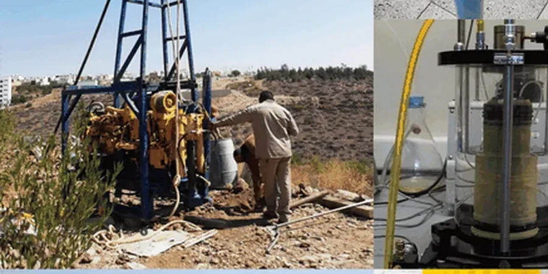

Chatham-Kent sits 197 meters above sea level on the Lake Erie plain, where thick clay deposits and glacial till dominate the subsurface profile. A soil mechanics study in Chatham-Kent is the first step for any foundation design, slope assessment, or pavement project in this region. The underlying soils — primarily silty clays of the Port Stanley drift — exhibit moderate to high plasticity, which directly affects bearing capacity and settlement behavior. Before pouring a single cubic meter of concrete, engineers rely on this investigation to classify strata, measure moisture content, and determine shear strength parameters. For projects near the Thames River floodplain, where groundwater sits shallow, the study also guides decisions on drainage and excavation support. Complementing this with an ensayo SPT provides a direct measure of soil resistance at depth, especially valuable in the deeper till layers that underlie much of the municipality.

In Chatham-Kent’s glaciolacustrine clays, a soil mechanics study is the only reliable way to predict differential settlement under structural loads.